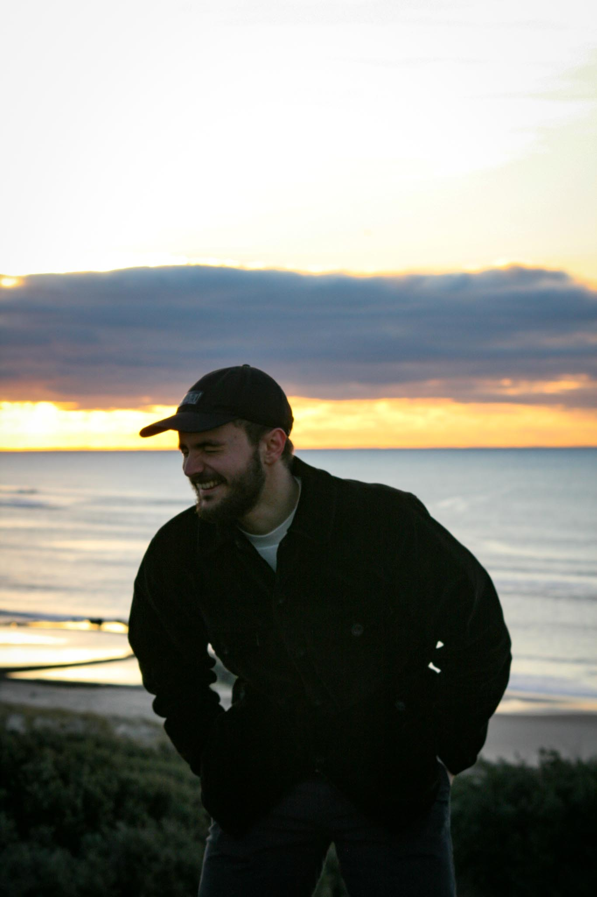

Léo Peyronnet
Salut, moi c'est Léo, j'ai 23 ans et je suis originaire de la région bordelaise. J’ai suivi une scolarité normale et ai passé un Baccalauréat Général ES. Après avoir hésité sur ma suite d’études et m’être réorienté, j’ai opté pour une licence Informatique, puis ai bifurqué vers cette formation CDA chez HumanBooster afin de faire du développement et de la programmation mon métier.

Rémi, 24ans
Ayant un père passionné d'informatique, j'ai baigné dedans depuis mon plus jeune âge.
En sortie de bac, je suis d'abord allé en PACES mais le cadre ne m'a pas convenu j'ai donc changé de cap pour aller en DUT informatique. Avec le diplome en poche j'ai d'abord trouvé un travail de développeur junior python qui n'a pas duré car ils avaient besoin d'un senior. Ensuite j'ai été porteur presse un moment avant de commencer une POEC Java. Puis j'ai enchainé sur un emploi de technicien de maintenance pour un logiciel pour les établissements de santé.
Virginie, 34 ans
Passionnée d'informatique depuis mon plus jeune âge. L'ordinateur familial en a d'ailleurs fait les frais...
J'ai fait des études en communication et en journalisme. Après 8 années à travailler dans le secteur de
l'audiovisuel
à divers posts, j'entame une reconversion en conception et développement d'applications.